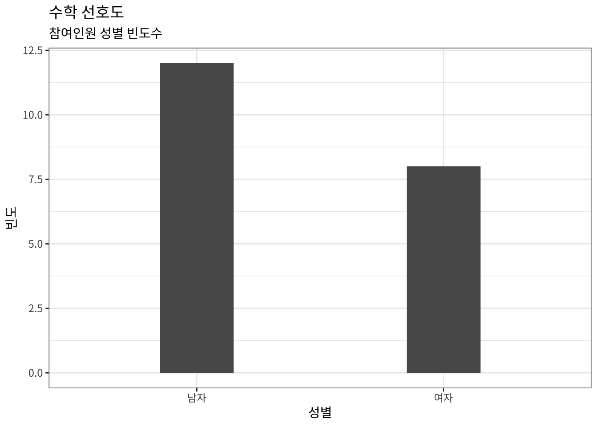
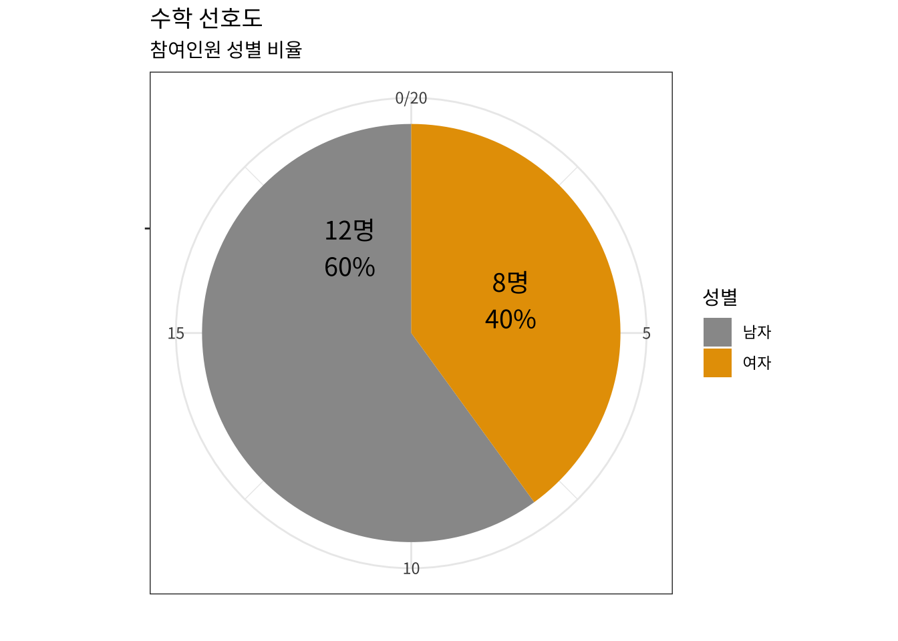

math_pref.Rmd
library(hsData)math_pref
| 성별 | 수학_선호도 | 키 | 몸무게 |
|---|---|---|---|
| 남자 | 5 | 150 | 45 |
| 여자 | 2 | 145 | 40 |
| 남자 | 1 | 152 | 46 |
| 여자 | 3 | 162 | 59 |
| 남자 | 2 | 155 | 52 |
| 남자 | 3 | 165 | 60 |
| 여자 | 3 | 161 | 50 |
| 남자 | 3 | 157 | 54 |
| 여자 | 4 | 160 | 57 |
| 남자 | 3 | 153 | 49 |
| 남자 | 1 | 155 | 61 |
| 남자 | 2 | 162 | 71 |
| 여자 | 2 | 156 | 53 |
| 여자 | 3 | 160 | 57 |
| 남자 | 2 | 153 | 50 |
| 여자 | 3 | 164 | 55 |
| 남자 | 4 | 171 | 65 |
| 여자 | 3 | 155 | 50 |
| 남자 | 1 | 158 | 51 |
| 남자 | 2 | 172 | 65 |
library(tidyverse)
library(showtext)
font_add_google('Noto Sans KR', 'noto_sans_kr')
showtext_auto()
math_pref %>%
ggplot(aes(y=성별)) +
geom_bar( width = 0.3) +
coord_flip() +
theme_bw(base_family = "noto_sans_kr") +
labs(x="빈도",
title = "수학 선호도",
subtitle = "참여인원 성별 빈도수")
math_pref %>%
count(성별, name = "인원수") %>%
ggplot(aes(x="", y=인원수, fill = 성별)) +
geom_bar( width = 0.3, stat = "identity") +
coord_polar("y", start = 0) +
theme_bw(base_family = "noto_sans_kr") +
scale_fill_manual(values=c("#999999", "#E69F00")) +
geom_text(aes(y = 인원수/2 + c(cumsum(인원수)[-length(인원수)], 0),
label = glue::glue("{인원수}명\n{scales::percent(인원수/20)}") ), size=5,
family = "noto_sans_kr") +
labs(x="",
y = "",
title = "수학 선호도",
subtitle = "참여인원 성별 비율") 